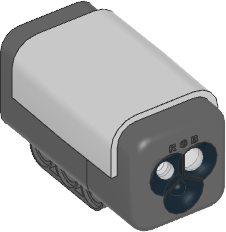

| ❌ | ❌ | ❌ | ❌ | ❌ | ❌ | ✅ |
|---|
NXT Color Sensor

- class ColorSensor(port)
LEGO® MINDSTORMS® NXT Color Sensor.
- Parameters:
port (Port) – センサーが接続されているポート。
- color() Color
Scans the color of a surface.
You choose which colors are detected using the
detectable_colors()method. By default, it detectsColor.RED,Color.YELLOW,Color.GREEN,Color.BLUE,Color.WHITE, orColor.NONE.- Returns:
Detected color.
- ambient() int: %
Measures the ambient light intensity.
- Returns:
Ambient light intensity, ranging from 0% (dark) to 100% (bright).
- reflection() int: %
Measures how much a surface reflects the light emitted by the sensor.
- Returns:
Measured reflection, ranging from 0% (no reflection) to 100% (high reflection).
- rgb() tuple[int, int, int]
Measures the reflection of a surface using a red, green, and then a blue light.
- Returns:
Tuple of reflections for red, green, and blue light, each ranging from 0.0% (no reflection) to 100.0% (high reflection).
Advanced color sensing
- hsv() Color
Scans the color of a surface.
This method is similar to
color(), but it gives the full range of hue, saturation and brightness values, instead of rounding it to the nearest detectable color.- Returns:
Measured color. The color is described by a hue (0–359), a saturation (0–100), and a brightness value (0–100).
- detectable_colors(colors)
- detectable_colors() Collection[Color]
color()メソッドが検出する色を設定します。アプリケーションで検出したい色だけを指定してください。これにより、 フルカラー測定値は最も近い指定色に丸められ、他の色は無視されます。 これにより信頼性が向上します。
引数を指定しない場合は、現在選択されている色が返されます。
ブロックでコーディングする場合は、センサーセットアップブロックで 設定します。
Built-in light
This sensor has a built-in light. You can make it red, green, blue, or turn it off.
- light.off()
ライトを消します。